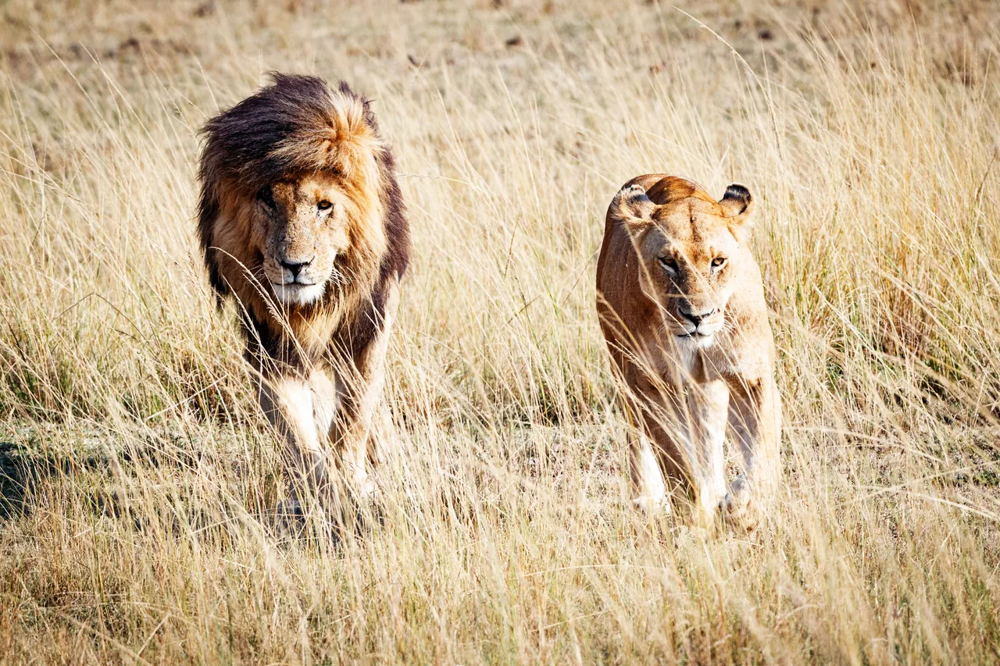

Serengeti National Park
Grass to the horizon, predators in the kopjes and a sky that changes by the hour.
The name comes from the Maasai word for endless plains, and on the first morning it is easy to see why. The Serengeti unrolls in every direction, a sea of short grass broken by granite kopjes, flat-topped acacias and the dark ribbons of seasonal rivers. Yet the real story is told at closer range: a leopard's tail hanging from a sausage tree, the twitch of a lioness's ear in the long grass, fresh cheetah tracks in the dust beside the road. This is where Wild Within begins.
Central Serengeti, around the Seronera River valley, is the heart of the park and the reason so many travellers fall for it. Permanent water keeps resident game here throughout the year, and where there is game there are predators. Lions rest on the kopjes, leopards favour the fig and sausage trees along the watercourses, and cheetahs hunt the open plains to the south and east. Your guide reads the landscape constantly, watching for alert gazelles, circling vultures and the subtle signs that something is about to happen.
The Serengeti is also the stage for the Great Migration, the vast movement of wildebeest and zebra that follows the rains in a loop through Tanzania and into Kenya's Maasai Mara. Where the herds are depends on the month, and planning around them is part of the craft. We usually combine the central plains with Ngorongoro, Tarangire or the northern and southern Serengeti, staying in tented camps where the sounds of the night come right up to the canvas.
What makes it extraordinary.
Who you might meet.
From our guides
The rhythm of the seasons.
Finding your way.
Highlighted areas show this destination. Select any other place on the map to explore it next.
Lodges & camps we love.
Places we use on our own itineraries, chosen for setting, comfort and warm service. Upgrades are always possible.
Journeys that go there.
Ways to go deeper.
Questions, answered.
Still curious? Our team in Arusha knows these places intimately.
How many days do I need in the Serengeti?
We recommend a minimum of two nights, ideally three. The road journey from Karatu to the central Serengeti takes around three hours of driving before game viewing even begins, so a single night feels rushed. Three nights give you one or two full days to explore the Seronera valley, the kopjes and the open plains at a relaxed pace. If you want to follow the migration north or south, add further nights in that area.
When is the best time to visit?
The central Serengeti is good all year because permanent water keeps resident wildlife in the area. The dry season from June to October offers the easiest game viewing and pleasant weather. December to March brings green landscapes and the calving season in the south. April and May are the wettest months, quieter and lush, though some tracks become muddy and a few camps close for the season.
Will I see the Great Migration in the central Serengeti?
Sometimes, but it depends on timing. The herds generally pass through the central and western areas around April to June on their way north, and again around November as they return south. Outside those windows they are likely to be in the far north or the southern plains. We plan your route around the expected position of the herds and add the right area if the migration is your priority.
Is the Serengeti crowded?
Popular sightings around Seronera can attract several vehicles, particularly in peak months. The park is vast, however, and a private safari lets your guide choose quieter loops, leave early and stay out over lunch while others return to camp. Many of our favourite moments happen well away from the main tracks, simply because we have the flexibility to go and look.
Can I see the Big Five here?
Lion, leopard, elephant and buffalo are all present in the Serengeti, and lions in particular are seen frequently. Black rhino do live in the ecosystem but are rare and elusive here. If seeing a rhino matters to you, we recommend pairing the Serengeti with the Ngorongoro Crater, which offers a far better chance.
Is the Serengeti suitable for children?
Yes, with the right pacing. Long drives can be tiring for younger children, so we build in shorter game drives, breaks at camp and plenty of time for questions. Many children find the Serengeti thrilling, especially with their own binoculars. Some camps have age guidelines, so let us know the ages of your group when planning and we will suggest suitable options.